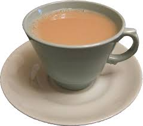
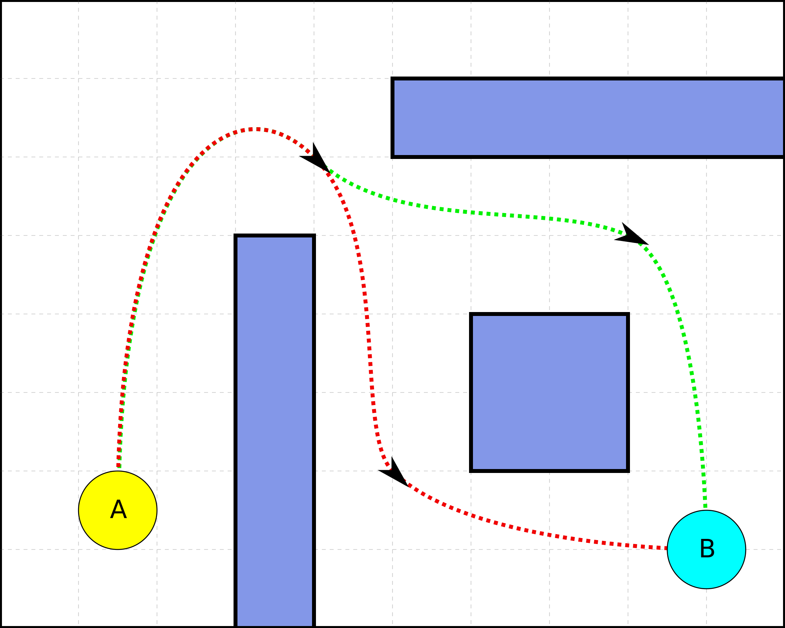
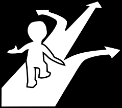
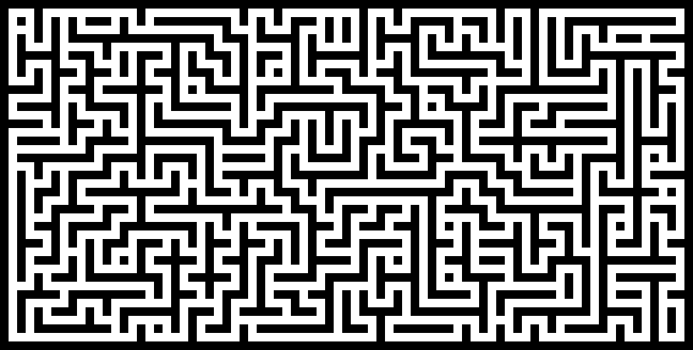

Starting Out

 |
|
|
Aims
- Understand Importance of Clarity
- Sequences and Operations
- Describe a Program
Reuse

This work is licensed under a Creative Commons Attribution-NonCommercial-ShareAlike 4.0 International License.
http://creativecommons.org/licenses/by-nc-sa/4.0/deed.en_USThis means you are free to copy and redistribute the material and adapt and build on the material under the following terms: You must give appropriate credit, provide a link to the license and indicate if changes were made. If you adapt or build on the material you must distribute your work under the same license as the original.
Note that this presentation contains images owned by others. Please seek their permission before reusing these images.
A Cup of Tea
Write down the instructions for making a cup of tea
Making a cup of tea
- milk
- tea bag
- sugar
- water
- cup
- kettle
- get the kettle
- put some water in it and switch in on
- put the tea bag in the cup
- pour the water in the cup
- pour some milk
- add some sugar
- take the tea bag out
- stir
Why?
There are a set of steps to follow for making a cup of tea.
A recipe - in computing, science and maths recipe isn't the word used.
The term algorithm is used.
Algorithm
An alogrithm is a set of steps to follow to accomplish a task.
These form the basis of a program for a computer.
Often written in pseudo-code.
Reading an Algorithm
Look at the instructions of another person.
How similar are the sets of instructions?
Can you understand them?
Important - there can be multiple approaches to a problem.
A New Problem - Navigation
A New Problem - Navigation
On the worksheets there is a straight line corridor to move your person down.
Write down a set of instructions to move your person down the corridor.
Note that the pit is bottomless and if the person lands on it they fall forever.
Now get another person to try your instructions.
Problems
Were there any problems?
- Language
- Actions
- Knowledge
- Timing
Pseudo-Code
The steps of a program are written in a more accessible language (like English).
It is used to detail how a program or part of a program should operate.
Often used in design and preparation.
Pseudo-Code
There is no standard for pseudo-code.
It may not replicate all aspects of actual code.
It is for people not computers.
A Quote
"Any fool can write code that a computer can understand. Good programmers write code that humans can understand."
Attributed to Martin Fowler - a respected British software engineer.
Write programs so that other people can understand them.
Actions
To make the navigation easier - lets create a set of standard steps called actions.
What actions should we have?
Actions
Some sample actions
- Walk 1 Space
- Run 2 Spaces
- Jump Over 1 Space
Rewrite your instructions using these actions.
A Working Set?
You now have a working set of instructions.
Will they always work?
What happens if the position of the pit changes?
Changing Circumstances
Up to now your person follows your instructions.
You have complete knowledge of what will happen and the layout of the corridor.
This rarely happens.
We often have to make choices.
Choices
Choices
The simplest choice can be written as:
IF condition THEN do this ELSE do this other thing
Examples:
IF it is raining THEN put up umbrella
IF cup of tea is too hot THEN let it cool ELSE drink the tea
Choices and Knowledge
To make a choice we need to evaluate something we can observe or know about.
What could we add as actions to the person for our instructions?
New Actions
- Look Ahead 1 Space - Gives information (Is there a pit or solid ground?)
- Determine Next Action (IF THEN)
Rewrite your instructions using these actions.
Try making up new corridors with different pit locations.
Different Lengths
What happens if the length of the corridor changes?
Continuation
Sometimes we have to keep going until a problem is done.
Maybe we don't know the length of the problem or it may change.
So we have to repeat actions.
Loops

Loops
Loops allow us to repeat a set of actions until we reach a goal.
This means we can check a condition like a choice.
There are different types of loop.
Loops - Pseudo-Code
Writing a loop in pseudo-code:
- WHILE condition is met:
- Actions
Example:
- WHILE kettle is not boiled:
- Wait and Twiddle Thumbs for 5 seconds
Adding Loops In
We could surround other actions with the loop making it the "main" entry to the steps.
So we could make this an action - Find Exit.
Try adding a loop to your instructions - and try changing the length of the corridor
Conditions
A couple of bits have used the term condition.
A condition in this case is an expression which can be true or false.
We can say that these conditions are Boolean.
Conditions
Boolean means that it can be used to describe values and operations which evaluate to true (1) or false (0).
Conditions can be simple or compound.
Simple
A simple condition is one which is either true or false and requires no other information.
Examples:
- it is raining
- the dragon has 5 heads
Compound
Sometimes it isn't as easy as one thing to check or maybe it has to be one thing and not another.
For this we have operators which are used to form compound conditions.
A fancy way of saying we will check more than one thing.
Operators
To make compound expressions we use operators in different combinations.
These operators can include:
- AND
- OR
- NOT
So we can do CONDITION1 AND CONDITION2 as a compound condition.
AND Examples
AND - both conditions need to be true for the AND operation to be true.
- Today is Wednesday AND Today is a school day - True
- Dinosaurs are extinct AND A Dinosaur walked down the road today - False
- The moon is made of cheese AND The sun is made of oranges - False
OR Examples
OR - Either condition needs to be true for the OR operation to be true.
- Today is Wednesday OR Today is a school day - True
- Dinosaurs are extinct OR A Dinosaur walked down the road today - True
- The moon is made of cheese OR The sun is made of oranges - False
NOT Examples
NOT - The condition is reversed - if it is False it becomes True
- NOT (Today is a school day) - False
- NOT (A Dinosaur walked down the road today) - True
Conditions
Anything which can be evaluated to true or false can be part of a condition.
What conditions may be useful to have in our corridor instructions?
A More Complicated Version
So far, we have looked at straight lines, lets put in some corners.
The second corridor has two corners in it.
Can you write a set of instructions using the actions for this one?
A More Complicated Version
What new actions will we need?
New Actions
We will need to add or update actions:
- Look Ahead 1 Space - Gives information (Add new response - wall)
- Determine Next Action (what happens if there is a wall?)
- Turn Left 90
- Turn Right 90
Can you follow each others instructions?
Try using each others instructions to move through the corridor.
Then try making a new corridor and see if it still works.
Should we add in anything else?
Which Way?
Look at the corridor in Sheet Number 3
This corridor has a T-junction in it.
This means the person could go left or right.
What happens if you write your instructions now?
Dead Ends
We can write a set of instructions that will cope with this layout but will it always deal with dead ends?
Are our instructions becoming more and more complicated?
Dead Ends
Maybe we need to consider moving backwards? Or should we turn?
Try out using a backwards move and decide which way would be better?
Refining Actions
Maybe we should change some actions to be better or more useful?
Current Actions:
- Walk 1 Space
- Run 2 Spaces
- Jump Over 1 Space
- Look Ahead 1 Space - Gives information (slab,pit,wall)
- Determine Next Action (IF response THEN action)
- Turn Left 90
- Turn Right 90
- Loop (keep going till out)
Refining Actions
What to look for:
- Similar actions, different sizes
- Similar actions, different direction
Refining Actions
Some ideas for change
- Move N Spaces in Direction
- Turn N Degrees
- Turn Direction
- Look Direction
Would need to define Direction to have options:Ahead, Left, Right, Back.
Refining Actions
Choose a corridor and write instructions using our updated actions.
A Maze
Lets look at a Maze
Your Maze
On the worksheet is a maze.
Double lines are walls, Pits are marked 'Pit' and the aim is to get from Start to Finish.
Try writing out your instructions.
Other mazes
How would you instructions work in another maze?
What did you assume in your instructions? - did you assume anything?
What new problems could occur?
Any Problems?
How do you remember which way you have been before?
How can you solve this?
An idea
How do we do this in the real world when searching for things?
Do we search where we have already searched?
What do we do?
Memory and Actions
When we do things, we remember what we did.
How do we do this?
Memory and Actions
We have our own memories - but how much can we remember at any one time?
We can take notes - provided we have something to take notes on.
We can change our world to help us remember - if we search in a house - maybe we close all the doors of the rooms we searched already.
A little aside
Can we always trust what we see and remember?
We will try two little experiments - one on what we see and one on what we remember.
Watch the video
Perception
Sometimes we have to account for what we see not matching what we understand or what is really there.
So sometimes we have to have aids to help us.
Memory
Listen to the list of words which are going to be read out.
Do not write anything down.
Now write down all the words you can remember.
How well did you do?
Memory
On average we only remember in our immediate recall 7 items plus or minus 2.
People use association to remember things. This can cause problems.
Computers are a little different but how could we take the aids we have and use them in our maze person?
New Actions
Let us use a method like closing the doors after searching a room - we will mark the maze as we make choices. This means that if we have to go back we don't make the same choice.
- Mark Choice - put an 'X' on the choice we made at an intersection
- Check Choice Markers - check to see if any of the intersection paths have already been used.
- Count Steps - Maybe each time we make a choice we want to record how many steps we took - is this useful?
- Write/Read Steps - when we hit an intersection we mark down or read the steps to it from the previous point - could this be useful?
How do you write it now?
Try writing a new set of instructions.
You should notice that each time we make the problem harder the instructions change but with a bit of thought we can make them more flexible.
How about a Dragon chasing you?
Let's make it a little more interesting - a dragon is in the maze trying to hunt you down.
Writing the dragon
What should our dragon do?
-
Track down your person
Breathe Fire
Eat Person
Dragon Actions
How do we turn these into a set of actions?
We can reuse a lot of the prior actions we used for our person.
What about new actions?
Tracking - maybe a Sniff action: sniff - which says which direction (up/down/left/right) the person is
Fire - an action to breathe fire over some squares - firebreath - which puts out fire for 2 squares in front
Eat Person - an action to eat a person right in front of it - eat
So using these actions and what you have already try writing a dragon.Trying this out
Now to test our running person and our dragon - in pairs, one of you act as the person, the other as the dragon and see who gets out and who gets eaten.Problems
There maybe a few problems - did you move at the same time, was one faster than the other or maybe something else?
So we need to have some way of making things work together and not get out of step.
Timing
Lets think about time, when we play a board game or a computer game there are turns or there is some form of clock. These say what we can do when and how much we can do.
So lets add a clock to our little dungeon
For each "tick" of the clock, the running person and the dragon can each perform an action.
This means that each of our players has to do the next action in their instructions on each clock tick.
An action is each time we have something to do so an choice may take several clock ticks to get the person or dragon to do something.
For this exercise, everyone will perform an action on a clock tick. This is not always the case - maybe an action takes two clock ticks or maybe something blocks an action and you have to wait.
But this doesn't solve all our problems - what happens if we try to do actions which conflict with each over.
In computers this can cause problems without a way to resolve this - in our dungeon, the way to resolve this is that if a conflict occurs the action of the person gets done before the action of the dragon.
This is because the dragon is huge and the person is small and can change quicker.
New Runner Actions
Should we add new actions to the runner?
What could these be?
Do a Chase
Try out comparing how each others dragons and people behave when facing each other.